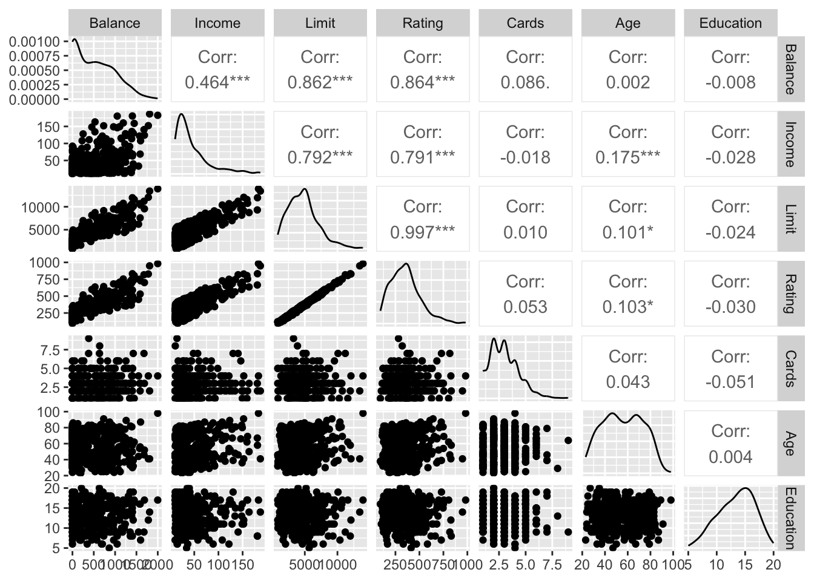
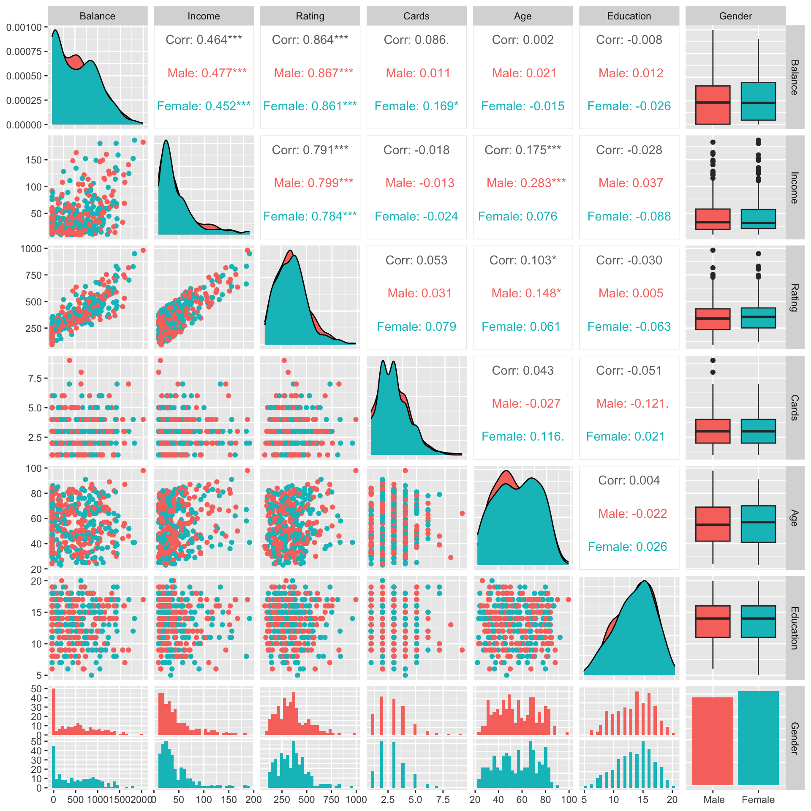
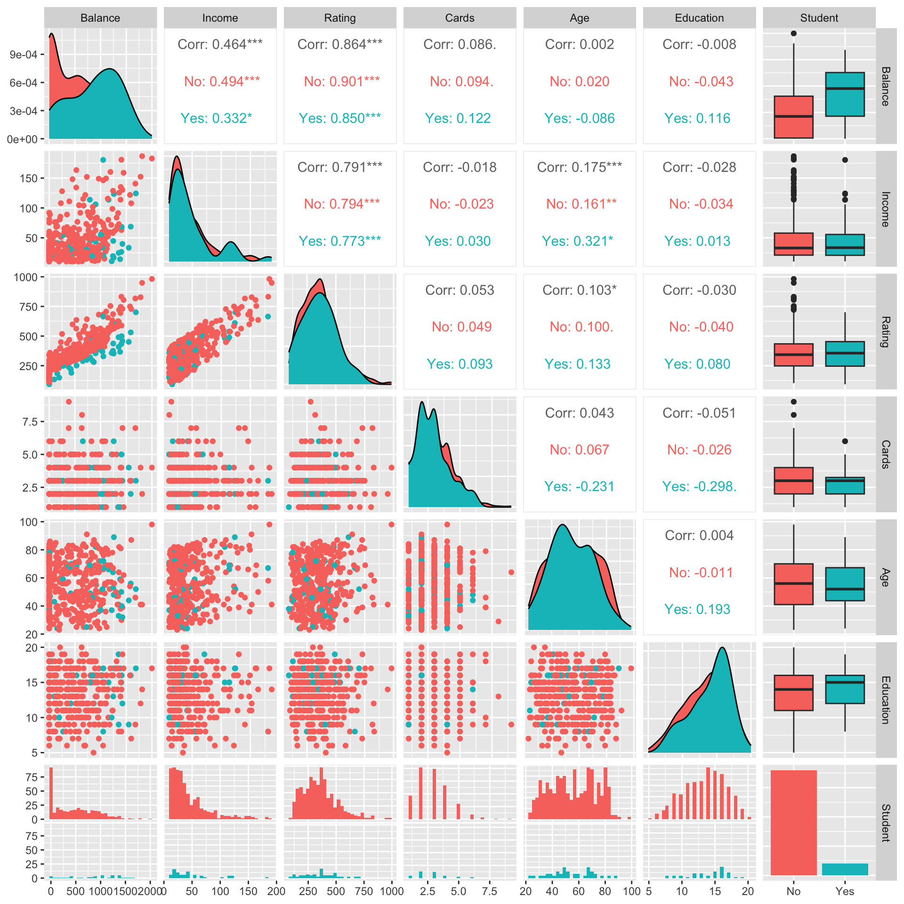
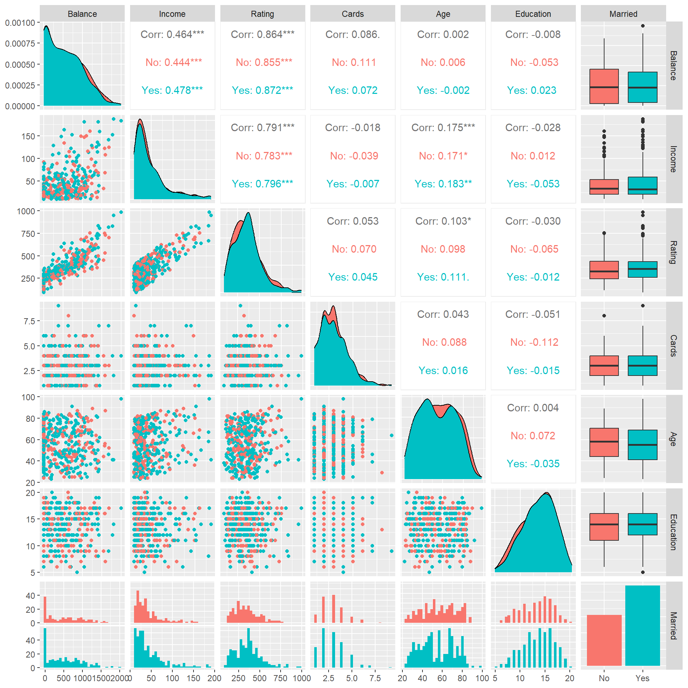
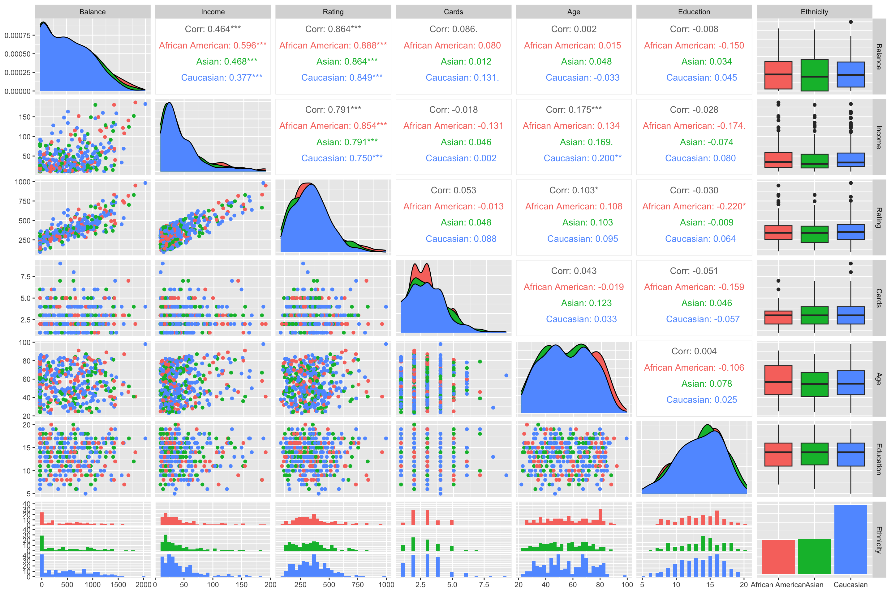
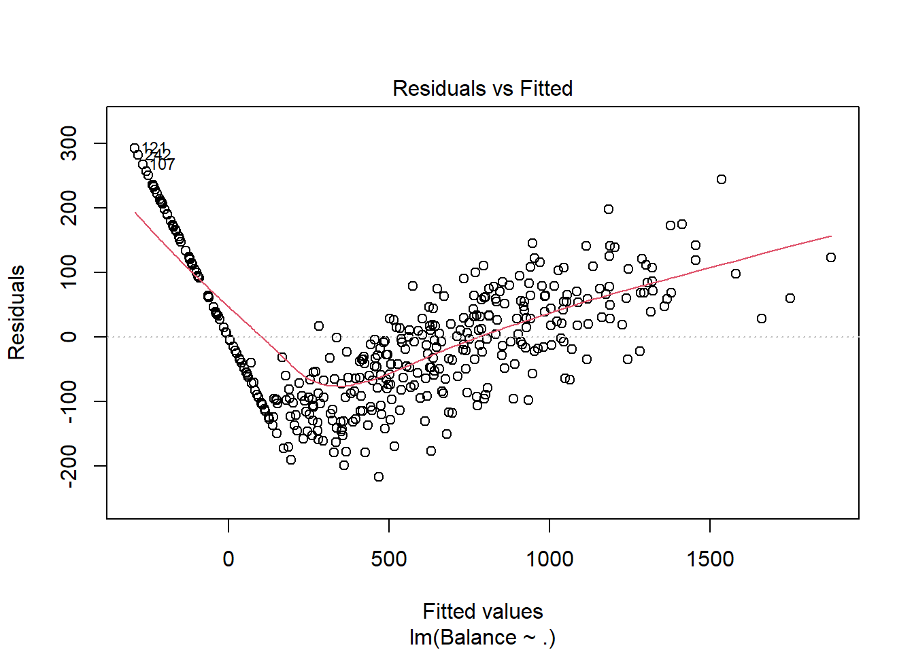
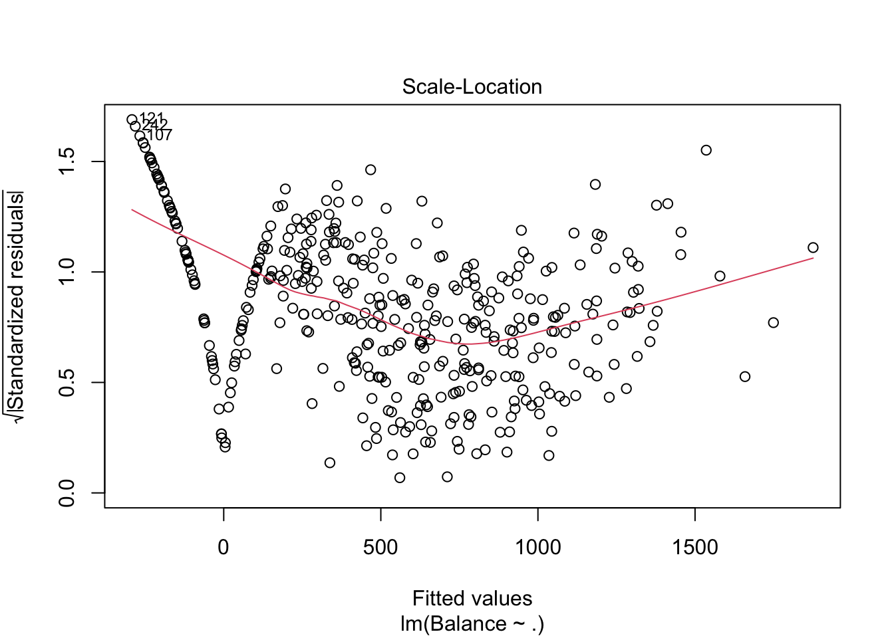
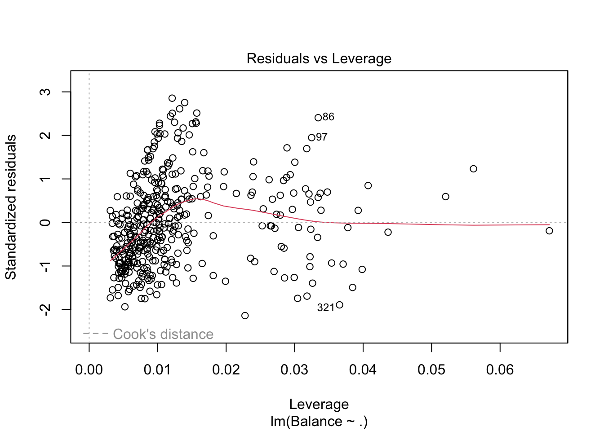

# Setup para o relatório Quarto
knitr::opts_chunk$set(echo = TRUE, message = FALSE, warning = FALSE)Crédito e Suas Relações
1 Introdução
Este relatório tem por objetivo ajustar um modelo de regressão linear múltiplo com o intuito de investigar a influência de determinadas características (medidas) associadas a características de pessoas a característica gasto médio em crédito (“balance”).
Neste contexto a regressão será realizada sobre a base de dados Credit, introduzida no livro James (2013), que contém características relacionadas a pessoas que possuem crédito em contas de banco, por exemplo: renda, limite de crédito, nível de educação e idade.
Utilizaremos o nível de significancia de 10% para toda análise.
2 Os dados
É possível baixar os dados do UCI Machine Learning Repository – Iris Data Set, mas a biblioteca ISLR do R já os contém. Apenas carregando a biblioteca, um data frame chamado credit fica disponibilizado e poderá ser usado imediatamente. Vejamos em seguida.
library(dplyr)
library(ISLR)
glimpse(Credit) Rows: 400
Columns: 12
$ ID <int> 1, 2, 3, 4, 5, 6, 7, 8, 9, 10, 11, 12, 13, 14, 15, 16, 17, 1…
$ Income <dbl> 14.891, 106.025, 104.593, 148.924, 55.882, 80.180, 20.996, 7…
$ Limit <int> 3606, 6645, 7075, 9504, 4897, 8047, 3388, 7114, 3300, 6819, …
$ Rating <int> 283, 483, 514, 681, 357, 569, 259, 512, 266, 491, 589, 138, …
$ Cards <int> 2, 3, 4, 3, 2, 4, 2, 2, 5, 3, 4, 3, 1, 1, 2, 3, 3, 3, 1, 2, …
$ Age <int> 34, 82, 71, 36, 68, 77, 37, 87, 66, 41, 30, 64, 57, 49, 75, …
$ Education <int> 11, 15, 11, 11, 16, 10, 12, 9, 13, 19, 14, 16, 7, 9, 13, 15,…
$ Gender <fct> Male, Female, Male, Female, Male, Male, Female, Male, F…
$ Student <fct> No, Yes, No, No, No, No, No, No, No, Yes, No, No, No, No, No…
$ Married <fct> Yes, Yes, No, No, Yes, No, No, No, No, Yes, Yes, No, Yes, Ye…
$ Ethnicity <fct> Caucasian, Asian, Asian, Asian, Caucasian, Caucasian, Africa…
$ Balance <int> 333, 903, 580, 964, 331, 1151, 203, 872, 279, 1350, 1407, 0,…Visualizando rapidamente a estrutura da base de dados, observamos as seguintes variáveis:
Credit.ID: Removeremos essa variável dado que não servirá para nossa análise, pois é somente um identificador;Credit.Income: Quantitativa Continua, Salário do usuário em milhares de dolares;Credit.Limit: Quantitativa Discreta, Llimite do cartão de crédito do usuário;Credit.Rating: Quantitativa Discreta, Nível de crédito do usuário;Credit.Cards: Quantitativa Discreta, Número de cartões de crédito;Credit.Age: Quantitativa Discreta, Idade do usuário;Credit.Education: Quantitativa Ordinal, Nível de educação do usuário em anos;Credit.Student: Qualitativa Nominal, Se o usuário foi ou não um estudante;Credit.Married: Qualitativa Nominal, Se o usuário já se casou;Credit.Ethnicity: Qualitativa Nominal, Indicador da etnia autointitulada pelo usuário;Credit.Balance: Variavel resposta de estudo, Qual o gasto médio do cartão de crédito do usuário;
2.1 Análise exploratória dos dados
library(skimr)
dados <- Credit %>% select(-ID)
dados <- dados <- dados %>%
select(Balance, everything())
skim(dados)| Name | dados |
| Number of rows | 400 |
| Number of columns | 11 |
| _______________________ | |
| Column type frequency: | |
| factor | 4 |
| numeric | 7 |
| ________________________ | |
| Group variables | None |
Variable type: factor
| skim_variable | n_missing | complete_rate | ordered | n_unique | top_counts |
|---|---|---|---|---|---|
| Gender | 0 | 1 | FALSE | 2 | Fem: 207, Ma: 193 |
| Student | 0 | 1 | FALSE | 2 | No: 360, Yes: 40 |
| Married | 0 | 1 | FALSE | 2 | Yes: 245, No: 155 |
| Ethnicity | 0 | 1 | FALSE | 3 | Cau: 199, Asi: 102, Afr: 99 |
Variable type: numeric
| skim_variable | n_missing | complete_rate | mean | sd | p0 | p25 | p50 | p75 | p100 | hist |
|---|---|---|---|---|---|---|---|---|---|---|
| Balance | 0 | 1 | 520.02 | 459.76 | 0.00 | 68.75 | 459.50 | 863.00 | 1999.00 | ▇▅▃▂▁ |
| Income | 0 | 1 | 45.22 | 35.24 | 10.35 | 21.01 | 33.12 | 57.47 | 186.63 | ▇▂▁▁▁ |
| Limit | 0 | 1 | 4735.60 | 2308.20 | 855.00 | 3088.00 | 4622.50 | 5872.75 | 13913.00 | ▆▇▃▁▁ |
| Rating | 0 | 1 | 354.94 | 154.72 | 93.00 | 247.25 | 344.00 | 437.25 | 982.00 | ▆▇▃▁▁ |
| Cards | 0 | 1 | 2.96 | 1.37 | 1.00 | 2.00 | 3.00 | 4.00 | 9.00 | ▇▇▂▁▁ |
| Age | 0 | 1 | 55.67 | 17.25 | 23.00 | 41.75 | 56.00 | 70.00 | 98.00 | ▆▇▇▇▁ |
| Education | 0 | 1 | 13.45 | 3.13 | 5.00 | 11.00 | 14.00 | 16.00 | 20.00 | ▂▅▇▇▂ |
dadosNum <- select(dados, -c(Gender, Student, Married, Ethnicity))2.1.1 Comentários:
Podemos observar que há 400 linhas de dados as quais nenhuma vai ser desconsiderada, dado que observamos também que não há dados NaN. Podemos tabém observar que há 4 variáveis qualitativas e que há mais dados de pessoas sem estudo do que com estudo e mais casadas do que não casadas.
2.1.2 Análise de correlação
library(GGally)
graf1 <- ggpairs(dadosNum, columns = 1:ncol(dadosNum))
graf1
library(ggplot2)
ggsave("Grafico_dispersao_iris.jpeg")2.1.2.1 Comentários
É possível observar que:
- A variável dependente
Balance:
não apresenta correlação linear significante com a variável
Age(r= 0.002, 0.1 < p < 1);não apresenta correlação linear significante com a variável
Education(r= -0.008, 0.1 < p < 1);apresenta correlação linear baixa com a variável
Cards(r= 0.086, 0.05 < p < 0.1);apresenta correlação linear significante com a variável
Income(r= 0.464, 0 < p < 0.001);apresenta correlação linear significante com a variável
Limit(r= 0.862, 0 < p < 0.001);apresenta correlação linear significante com a variável
Rating(r= 0.864, 0 < p < 0.001);
- A variável independente
Income:
- apresenta correlação linear significativa com a variável independente
Limit(r=-0.792, p < 0).
Como esta correlação, em valor absoluto é praticamente 0.8, ou seja pode haver indício para um posterior problema de multicolinearidade.
- apresenta correlação linear significativa com a variável independente
Rating(r=-0.791, p < 0).
Como esta correlação, em valor absoluto é praticamente 0.8, ou seja pode haver indício para um posterior problema de multicolinearidade.
- apresenta correlação linear significativa com a variável independente
Age(r=0.175, p< 0)
Como esta correlação, em valor absoluto não é superior a 0.9 (ou 0.8) não há indício para um posterior problema de multicolinearidade.
- A variável independente
Limit:
- apresenta correlação linear significativa com a variável independente
Rating(r=0.997, p < 0).
Como esta correlação, em valor absoluto é superior a 0.9 há indício para um posterior problema de multicolinearidade. Observa-se, ainda, que tal correlação é do tipo forte e positiva, ou seja, as medidas associadas se relacionam de forma fortemente positiva.
- apresenta correlação linear significativa com a variável independente
Age(r=0.101, p< 0.01)
Como esta correlação, em valor absoluto não é superior a 0.9 (ou 0.8) não há indício para um posterior problema de multicolinearidade.
- A variável independente
Rating:
- apresenta correlação linear significativa com a variável independente
Age(r=0.103, p< 0.01)
Como esta correlação, em valor absoluto não é superior a 0.9 (ou 0.8) não há indício para um posterior problema de multicolinearidade.
2.1.2.2 Multicolinearidade - Analisando o VIF - Variance Inflation Factor
library(car)
modelo1 <- lm(Balance ~ ., data = dadosNum)
vif(modelo1) Income Limit Rating Cards Age Education
2.773276 228.848290 230.612596 1.433932 1.038541 1.008043 Como podemos ver, são as variáveis Limit e Rating apresentam vif maior que 10 e são exatamente elas que também apresentaram forte correlação positiva.
3 Ajuste do modelo 1
summary(modelo1)
Call:
lm(formula = Balance ~ ., data = dadosNum)
Residuals:
Min 1Q Median 3Q Max
-227.25 -113.15 -42.06 45.82 542.97
Coefficients:
Estimate Std. Error t value Pr(>|t|)
(Intercept) -477.95809 55.06529 -8.680 < 2e-16 ***
Income -7.55804 0.38237 -19.766 < 2e-16 ***
Limit 0.12585 0.05304 2.373 0.01813 *
Rating 2.06310 0.79426 2.598 0.00974 **
Cards 11.59156 7.06670 1.640 0.10174
Age -0.89240 0.47808 -1.867 0.06270 .
Education 1.99828 2.59979 0.769 0.44257
---
Signif. codes: 0 '***' 0.001 '**' 0.01 '*' 0.05 '.' 0.1 ' ' 1
Residual standard error: 161.6 on 393 degrees of freedom
Multiple R-squared: 0.8782, Adjusted R-squared: 0.8764
F-statistic: 472.5 on 6 and 393 DF, p-value: < 2.2e-16
Ao observar o ajuste do primeiro modelo com o intuito de prever o Gasto médio em crédito (Balance), tem-se que as variáveis Income, Limit, Rating e Age explicam de forma estatísticamente significativa e com um bom ajuste indicado pelo Coeficiente de determinação ajustado (Adjusted R-squared: 0.8764). Entretanto, dois resultados nos chamam a atenção, quais sejam:
O erro padrão da variável
Cardsé extremamente maior que os erros padrões das demais variáveis preditoras;O erro padrão da variável
Educationé significativamente maior que os erros padrões das demais variáveis preditoras;A variável
Incomeapresenta efeito negativo aoBalance, talvez pelo fato de que se há um alto saldo entrando na conta do usuário, não há necessidade de se usar o crédito disponível.A variável
Ageapresenta efeito negativo aoBalance, logo quanto maior a idade, menor ogasto médio em crédito.
Resumindo, diante das análises prévias e constatações a partir dos resultados do modelo, identificamos que existe o problema de multicolinearidade de modo que as variáveis preditoras Limit e Rating não conseguem explicar a variável resposta Balance de forma uníssona, pois as mesmas compartilham da mesma informação muito fortemente de modo que elas competem para juntas explicarem/predizerem a variável resposta Balance, compromentendo assim, a confiabilidade dos coeficientes estimados e dos valores p.
3.1 Existe multicolinearidade, e agora?
Na presente análise, removeremos a variável explicativa Limit dado que observamos que é menos explicativa que a Rating no gráfico da Seção 2.1.2. Vejamos:
3.2 Modelo sem Limit (modelo2)
modelo2 <- update(modelo1, ~ . -Limit)
summary(modelo2)
Call:
lm(formula = Balance ~ Income + Rating + Cards + Age + Education,
data = dadosNum)
Residuals:
Min 1Q Median 3Q Max
-258.70 -113.51 -36.34 57.84 578.85
Coefficients:
Estimate Std. Error t value Pr(>|t|)
(Intercept) -525.91825 51.52197 -10.208 <2e-16 ***
Income -7.54314 0.38456 -19.615 <2e-16 ***
Rating 3.93664 0.08677 45.367 <2e-16 ***
Cards 2.56418 5.99015 0.428 0.6688
Age -0.90190 0.48087 -1.876 0.0615 .
Education 2.40719 2.60927 0.923 0.3568
---
Signif. codes: 0 '***' 0.001 '**' 0.01 '*' 0.05 '.' 0.1 ' ' 1
Residual standard error: 162.6 on 394 degrees of freedom
Multiple R-squared: 0.8765, Adjusted R-squared: 0.8749
F-statistic: 559.3 on 5 and 394 DF, p-value: < 2.2e-16dados <- dados %>% select(-Limit)Observa-se que; para este modelo ajustado; As variáveis independentes
Income,RatingeAgesão estatísticamente significativas com a adequação de ajuste do modelo aos dados igual a 87,5% (Adjusted R-squared: 0.8749).
3.2.1 Vif para o modelo
vif(modelo2) Income Rating Cards Age Education
2.772528 2.720585 1.018348 1.038468 1.003614 Podemos ver que não há problema de correlação linear entre as variáveis independentes, visto que o vif deu abaixo de 10.
4 Regressão com variáveis Qualitativas (Dummies/Fictícias/Indicadoras)
Agora, colocaremos novamente as variáveis quantitativas para fazermos as análises com os dados sem problema de multicolinearidade entre as variáveis explicativas.
4.1 Análise de correlação
dadosGender <- dados %>% select(-c(Student,Married,Ethnicity))
graf2 <- ggpairs(dadosGender, columns = 1:ncol(dadosGender), ggplot2::aes(colour=Gender), progress = FALSE)
print(graf2)
Observamos que …
dadosStudent <- dados %>% select(-c(Gender,Married,Ethnicity))
graf2 <- ggpairs(dadosStudent, columns = 1:ncol(dadosStudent), ggplot2::aes(colour=Student))
graf2
Observamos que …
dadosMarried <- dados %>% select(-c(Student,Gender,Ethnicity))
graf2 <- ggpairs(dadosMarried, columns = 1:ncol(dadosMarried), ggplot2::aes(colour=Married))
graf2
Observamos que …
dadosEthnicity <- dados %>% select(-c(Student,Married,Gender))
graf2 <- ggpairs(dadosEthnicity, columns = 1:ncol(dadosEthnicity), ggplot2::aes(colour=Ethnicity))
graf2
Observamos que …
4.2 Multicolinearidade - Analisando o VIF - Variance Inflation Factor
modelo3 <- lm(Balance ~ ., data = dados)
vif(modelo3) GVIF Df GVIF^(1/(2*Df))
Income 2.784966 1 1.668822
Rating 2.730561 1 1.652441
Cards 1.019639 1 1.009772
Age 1.051135 1 1.025249
Education 1.013503 1 1.006729
Gender 1.005848 1 1.002920
Student 1.022092 1 1.010986
Married 1.032237 1 1.015991
Ethnicity 1.027285 2 1.006753Como podemos ver, não há nenhum valor acima de 10, logo, não é notado um problema de multicolinearidade.
4.3 Modelo com variáveis qualitativas
summary(modelo3)
Call:
lm(formula = Balance ~ ., data = dados)
Residuals:
Min 1Q Median 3Q Max
-204.86 -79.28 -12.15 70.47 296.61
Coefficients:
Estimate Std. Error t value Pr(>|t|)
(Intercept) -549.31402 35.08452 -15.657 <2e-16 ***
Income -7.77460 0.24389 -31.878 <2e-16 ***
Rating 3.97896 0.05501 72.332 <2e-16 ***
Cards 3.96537 3.79288 1.045 0.2965
Age -0.64159 0.30614 -2.096 0.0367 *
Education -0.37986 1.65922 -0.229 0.8190
GenderFemale -10.71056 10.32498 -1.037 0.3002
StudentYes 416.43756 17.33606 24.021 <2e-16 ***
MarriedYes -15.10961 10.72822 -1.408 0.1598
EthnicityAsian 21.76158 14.67762 1.483 0.1390
EthnicityCaucasian 10.64919 12.71571 0.837 0.4028
---
Signif. codes: 0 '***' 0.001 '**' 0.01 '*' 0.05 '.' 0.1 ' ' 1
Residual standard error: 102.9 on 389 degrees of freedom
Multiple R-squared: 0.9512, Adjusted R-squared: 0.9499
F-statistic: 757.8 on 10 and 389 DF, p-value: < 2.2e-16Observa-se que; para este modelo ajustado; As variáveis independentes Cards, Education, Gender, Married e Ethnicity são estatísticamente insignificativas para a variável resposta Balance, logo, iremos remove-las. Também podemos observar que a variável qualitativa Student é estatisticamente significante para nossa variável resposta.
dados <- dados %>% select(-c(Cards, Education, Gender, Married, Ethnicity))
modelo4 <- lm(Balance ~ ., data = dados)5 Métodos de seleção de modelos
5.1 Medida AIC
AIC(modelo3)[1] 4854.895AIC(modelo4)[1] 4849.142Comparando-se os dois modelos; observa-se que o modelo com o menor valor de AIC é o modelo 4. Mas, como regra prática, não observa-se uma diferença entre os valores superior a 10 para que haja um indício significativo de real diferença, então podemos escolher o modelo 3 ou o 4.
5.2 Medida BIC
BIC(modelo3)[1] 4902.793BIC(modelo4)[1] 4873.091De maneira contrária ao AIC, podemos observar um valor de BIC significativamente menor para o modelo 4 (diferença maior que 10), logo, será o modelo selecionado.
5.3 Comparação de modelos encaixados (ANOVA) e R-Ajustado
anova(modelo4, modelo3)Analysis of Variance Table
Model 1: Balance ~ Income + Rating + Age + Student
Model 2: Balance ~ Income + Rating + Cards + Age + Education + Gender +
Student + Married + Ethnicity
Res.Df RSS Df Sum of Sq F Pr(>F)
1 395 4182600
2 389 4117780 6 64819 1.0206 0.4113TODO (Comentario do resultado da anova)
summary(modelo4)
Call:
lm(formula = Balance ~ ., data = dados)
Residuals:
Min 1Q Median 3Q Max
-217.606 -79.887 -8.163 62.680 292.009
Coefficients:
Estimate Std. Error t value Pr(>|t|)
(Intercept) -547.30470 21.46064 -25.503 <2e-16 ***
Income -7.79773 0.24218 -32.198 <2e-16 ***
Rating 3.98073 0.05458 72.927 <2e-16 ***
Age -0.62418 0.30407 -2.053 0.0408 *
StudentYes 417.50564 17.17164 24.314 <2e-16 ***
---
Signif. codes: 0 '***' 0.001 '**' 0.01 '*' 0.05 '.' 0.1 ' ' 1
Residual standard error: 102.9 on 395 degrees of freedom
Multiple R-squared: 0.9504, Adjusted R-squared: 0.9499
F-statistic: 1892 on 4 and 395 DF, p-value: < 2.2e-16Podemos perceber que o R-Ajustado para o modelo 3 e para o modelo 4 deram iguais. Logo, temos que os dois modelos explicam a mesma coisa, então, selecionamos o com menos variáveis (modelo4).
6 Modelo selecionado (modelo4)
Diante das análises realizadas até o momento e tendo como objetivos não apenas realizar previsões mas também interpretar de forma prática a relação entre as variáveis; o modelo a ser adotado e a ser verificado o atendimento dos pressuposto de um MRLM é o modelo 4. Vejamos:
plot(modelo4)



6.1 Análises dos pressupostos e Comentários
Análises análogas à Regressão Linear Simples.
- residual vs fitted: Foi percebido nos gráficos de residuos e altos indices da não linearidade dos dados além de suspeita de heterocedasticidade. Então, para poder melhorar a predição para além do que foi feito nessa análise, seria necessário a utilização de modelos não lineares e mais robustos.
- QQ plot: o gráfico não apresenta nem enviesamento para a direita nem enviesamento para a esqueda porém possui indicios de caudas pesadas, no geral entretanto as suspeitas de não linearidade dminuiram.
- Scale-location: a direção negativa do gráfico dos valores adaptados pelo modelo reafirma as suspeitas de heterocedasticidade, além disso os pontos não aparentam estarem espalhados aleatóriamente no entorno da linha do modelo.
- residual vs leverage: nenhum ponto dos dados está presente depois da distancia de cook indicando que nenhum ponto é um outlier influente o suficiente para alterar sozinho de forma significativa o resultado do modelo. …
7 Interpretações do modelo selecionado
Uma maneira automatizada para se relatar os resultados de um modelo é utilizando a função report do pacote de mesmo nome.
No relatório a ser entregue, o texto deve estar traduzido e interpretado também em termos práticos, de acordo com os objetivos do problema em estudo.
library(report)
report(modelo4)We fitted a linear model (estimated using OLS) to predict Balance with Income,
Rating, Age and Student (formula: Balance ~ Income + Rating + Age + Student).
The model explains a statistically significant and substantial proportion of
variance (R2 = 0.95, F(4, 395) = 1892.49, p < .001, adj. R2 = 0.95). The
model's intercept, corresponding to Income = 0, Rating = 0, Age = 0 and Student
= No, is at -547.30 (95% CI [-589.50, -505.11], t(395) = -25.50, p < .001).
Within this model:
- The effect of Income is statistically significant and negative (beta = -7.80,
95% CI [-8.27, -7.32], t(395) = -32.20, p < .001; Std. beta = -0.60, 95% CI
[-0.63, -0.56])
- The effect of Rating is statistically significant and positive (beta = 3.98,
95% CI [3.87, 4.09], t(395) = 72.93, p < .001; Std. beta = 1.34, 95% CI [1.30,
1.38])
- The effect of Age is statistically significant and negative (beta = -0.62,
95% CI [-1.22, -0.03], t(395) = -2.05, p = 0.041; Std. beta = -0.02, 95% CI
[-0.05, -9.90e-04])
- The effect of Student [Yes] is statistically significant and positive (beta =
417.51, 95% CI [383.75, 451.26], t(395) = 24.31, p < .001; Std. beta = 0.91,
95% CI [0.83, 0.98])
Standardized parameters were obtained by fitting the model on a standardized
version of the dataset. 95% Confidence Intervals (CIs) and p-values were
computed using a Wald t-distribution approximation.(TODO - Traduzir e dar mais contexto)
8 Previsões
Para realizar previsões sobre valores para a variável resposta, recomenda-se o uso de valores para as variáveis explicativas dentro dos respectivos intervalos observados. Daí a importância de um breve resumo sobre os dados observados:
summary(dados) Balance Income Rating Age Student
Min. : 0.00 Min. : 10.35 Min. : 93.0 Min. :23.00 No :360
1st Qu.: 68.75 1st Qu.: 21.01 1st Qu.:247.2 1st Qu.:41.75 Yes: 40
Median : 459.50 Median : 33.12 Median :344.0 Median :56.00
Mean : 520.01 Mean : 45.22 Mean :354.9 Mean :55.67
3rd Qu.: 863.00 3rd Qu.: 57.47 3rd Qu.:437.2 3rd Qu.:70.00
Max. :1999.00 Max. :186.63 Max. :982.0 Max. :98.00 Agora, suponha que temos por objetivo prever os valores de Balance considerando os seguintes valores para as variáveis explicativas:
novas.preditoras <- data.frame(Income=c(21.01, 45.22, 57.47), Rating=c(247.2, 354.9, 437.2), Age=c(41.75, 55.67, 70.0), Student=c("No", "No", "Yes"))8.1 Intervalo de Confiança
predict(modelo4, novas.preditoras) 1 2 3
246.842 478.095 1118.748 Os valores obtidos representam previsões pontuais dos dados das varíaveis preditoras selecionadas, porém isso não serve como medida de incerteza.
8.2 Intervalo de Confiança
predict(modelo4, novas.preditoras,
interval = "confidence") fit lwr upr
1 246.842 231.9412 261.7428
2 478.095 467.4312 488.7587
3 1118.748 1084.9249 1152.5710O intervalo de confiança serve como medida de incerteza, em relação a média esperada. Com base nos dados obtidos espera-se que para a primeira observação (1) a média esteja entre 231.9412 e 261.742, para a segunda observação (2) espera-se uma média entre 467.4312 e 488.7587, enquanto para a terceira observação (3) a média deve estar entre 1084.9249 e 1152.5710.
8.3 Intervalo de Predição/Previsão
Um intervalo de predição captura a incerteza em torno de um único valor não observado na base de dados e não em torno do seu valor médio/esperado o qual é obtido pelas variáveis preditoras observadas na base de dados.
predict(modelo4, novas.preditoras,
interval = "prediction") fit lwr upr
1 246.842 43.98951 449.6944
2 478.095 275.50965 680.6803
3 1118.748 913.63560 1323.8604Observa-se que o intervalo de predição é mais amplo do que o intervalo de confiança, pois considera a incerteza em torno de um valor individual não observado na base de dados. De acordo com os dados obtidos espera-se que um novo valor esteja entre 43.98951 e 449.6944 para a primeira observação (1), esteja entre 275.50965 e 680.6803 para a segunda observação (2) e para a terceira (3), é esperado que um novo valor esteja entre 913.63560 e 1323.8604
Interpretações:
Intervalo de Confiança: A incerteza em torno do valor médio esperado é relativamente menor, com intervalos mais estreitos, especialmente para a segunda observação. Isso sugere que o modelo tem boa precisão ao estimar a média da variável resposta para as combinações de preditoras fornecidas.
Intervalo de Predição: Reflete a variabilidade esperada para um novo valor individual. Por ser mais amplo, indica que os valores individuais podem ter uma dispersão considerável ao redor das predições ajustadas. Isso é esperado, pois o intervalo de predição leva em conta a variabilidade dos dados em relação ao valor médio.
9 Conclusão
É importantíssimo que no relatório estatístico haja esta seção para descrever em linhas gerais os resultados obtidos, especialmente em termos de resultados práticos e importantes para a resolução de um problema acadêmico e ou para a revelação(ões) de insights para um problema de negócio.
Referências
James, D. & Hastie, G. & Witten. 2013. An Introduction to Statistical Learning with applications in R. Springer-Verlag, New York. https://www.statlearning.com/.